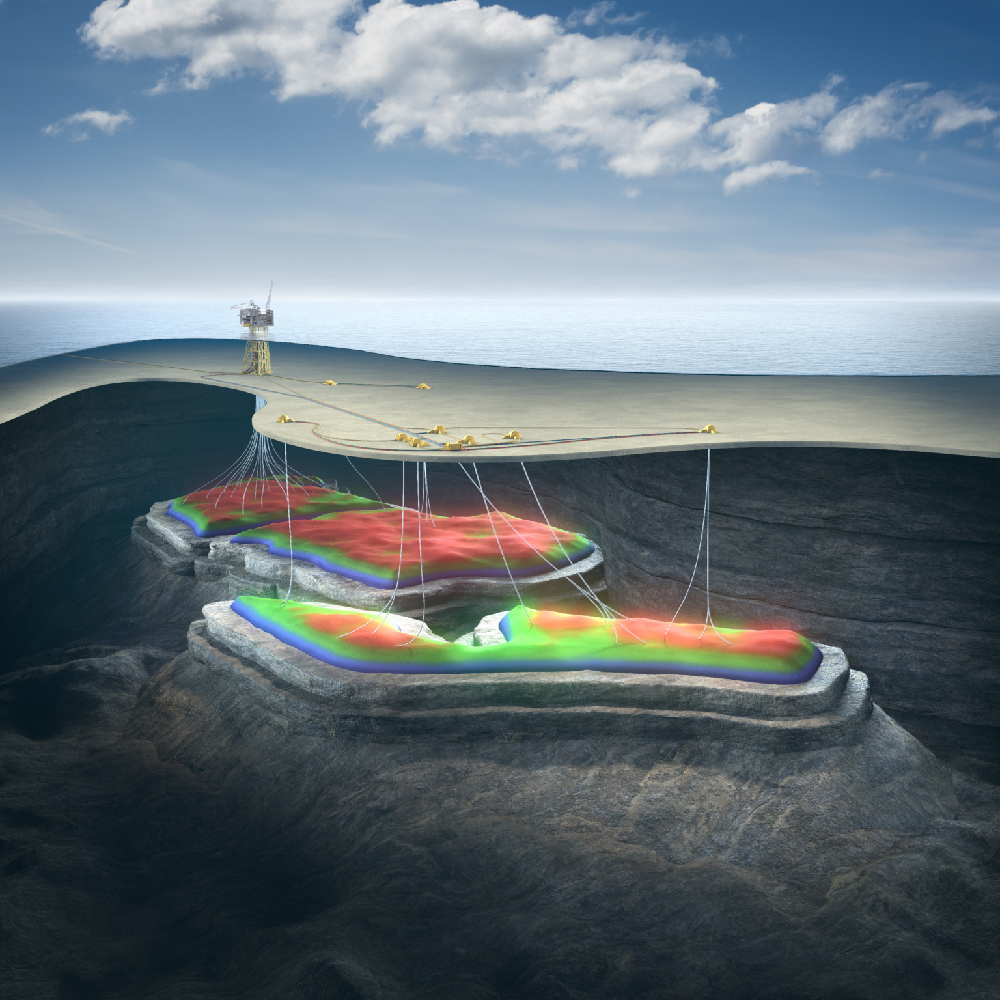
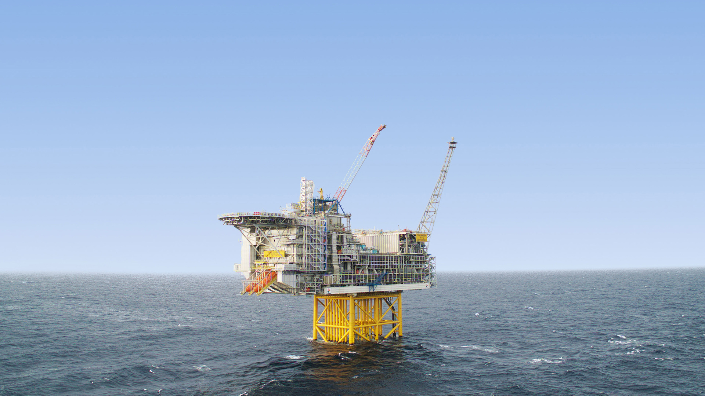
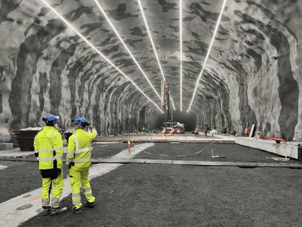
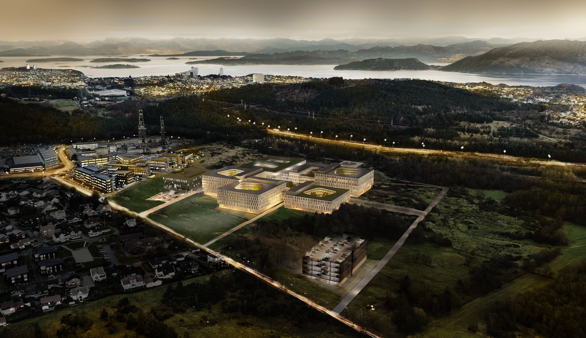
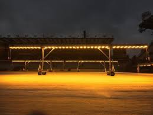
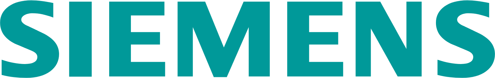

Trusted by industry leaders
Symra Subsea Tie-in
Siemens Energy — Ivar Aasen
Software Lead for the complete control system. Built the software that manages communication between the platform and underwater equipment, operator screens, simulation tools, and integration of valves, flow meters, and hydraulic systems. Currently bringing four underwater production wells online.

Hanz Subsea Tie-in
Siemens Energy — Ivar Aasen
Complete control system software development on Siemens platforms, including operator interfaces and standardized subsea communication. Successfully delivered through all testing phases, on-site startup, and now running in production.

E1 Project — Oslo Water Supply
OneCo Technology
Building a backup water supply system for Norway's capital. Developing the control software and operator screens that ensure reliable operation of this critical city infrastructure.

Nye SUS — Stavanger University Hospital
OneCo
Smart building automation for one of Norway's largest hospital construction projects. Programming intelligent lighting control and building management systems that keep the hospital running efficiently.

Turfpal — Sports Field Lighting
Turfpal
Custom software development for intelligent turf lighting systems. Control logic and automation for mobile sports field lighting rigs used across professional and municipal facilities.

Valhall IP Digitalization
Siemens
Modernizing and digitizing control systems on the Valhall offshore platform. Upgrading monitoring software and producing safety documentation to Norwegian industry standards.
Clients & Partners





